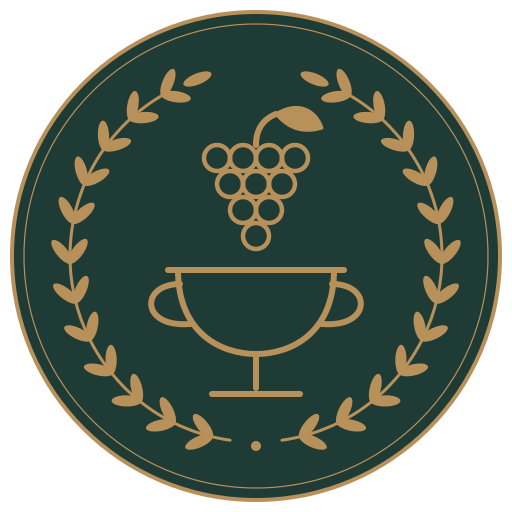

"O prazer não é o inimigo. O prazer sem consciência é."
Dionísio é o deus do vinho, do êxtase e da festa — e, por isso mesmo, o deus da medida. Aqui você encontra orientações para cuidar do que o prazer cobra do corpo: a cintura, o açúcar no sangue, o fígado, o álcool e os hábitos que o cérebro aprende a buscar sem pensar. Sem abrir mão da alegria de viver.
Dionísio nasceu duas vezes: de Sêmele, que morreu ao ver Zeus em toda a sua glória, e depois da coxa do próprio Zeus, que o gestou até o fim. É o deus do vinho, do teatro, da festa e do êxtase. Para os gregos, uma vida sem Dionísio era árida — mas o mesmo deus enlouquece quem o recusa e quem o cultua sem freio. Em As Bacantes, de Eurípides, o rei Penteu despreza o deus e acaba despedaçado pela própria mãe, Ágave, tomada pelo transe.
A resposta grega foi a medida. No banquete, o vinho era servido misturado com água, e beber puro era coisa de bárbaro. Em Delfos, no templo de Apolo, estava gravado o meden agan, "nada em excesso". E, segundo Plutarco — que foi sacerdote ali —, nos meses de inverno Apolo deixava o santuário a Dionísio: os dois deuses não se anulavam, se alternavam. Aristóteles chamou esse ponto de equilíbrio de temperança: o meio-termo entre o excesso e a insensibilidade, em que o prazer deixa de mandar na vida sem deixar de fazer parte dela.
É por isso que o Panteão Vital termina com os dois lado a lado: Apolo, com a evidência e a clareza; Dionísio, com o prazer vivido com consciência.
Com a idade, o corpo metaboliza o álcool mais devagar e o cérebro fica mais sensível a ele. A mesma quantidade que antes era bem tolerada passa a aumentar o risco de quedas, de confusão mental e de interação com remédios — e muita gente só percebe isso depois do primeiro susto.
A gordura no fígado (hoje chamada de MASLD) é muito comum e silenciosa: não dói, não avisa. Costuma andar junto com a barriga, o açúcar alto, a pressão alta e as gorduras do sangue alteradas — o conjunto que chamamos de síndrome metabólica. Barriga grande com pouco músculo é uma combinação especialmente ruim para quedas, memória e longevidade.
E o açúcar e os ultraprocessados são feitos para estimular o sistema de recompensa do cérebro. Com a solidão e o tédio, esse hábito pesa ainda mais.
"Envelhecer com excelência — mente clara, corpo ativo e cuidado inteligente."
Este conteúdo é educativo e não substitui consulta médica presencial. As orientações e formulários aqui disponíveis são ferramentas de apoio e triagem.
© Cognisa — Dr. Fausto Azambuja Machado, 2026